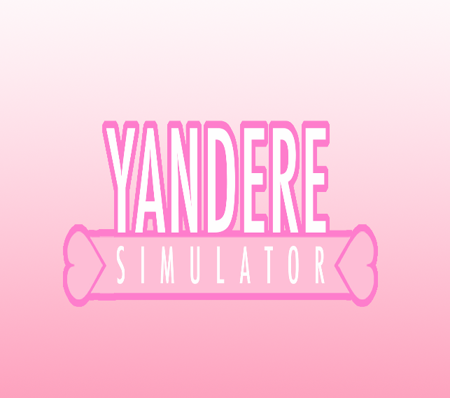
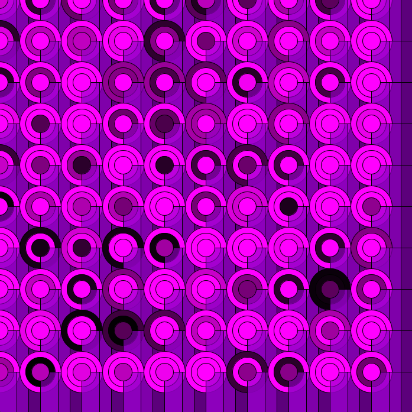
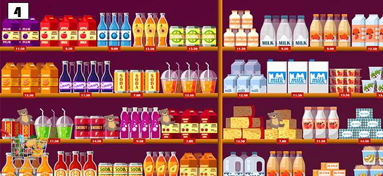

Este fue el primer trabajo de processing, el cual fue hecho con la intencion de evaluar y ayudar a conocer mejor la herramientas basicas del programa, se tenia que hacer un dibujo libre usando formas primitivas de processing como figuras geometricas, lineas y uso del color. Lo que decidi hacer fue un gato sentado mirando fijamente con un collar de mascota con este tp fue una manera de iniciar la cursada.
Este fue nuestro primer trabajo evaluado por eso tienemas consignias donde nos pidio incorporar gráficos un poco más elaborado, con animaciones e integrar nociones de programación relativas, almacenar en memoria valores numéricos, mostrar imágenes y escribir textos. Lo que decidi hacer yo fue los creditos de un videojuego antiguo llamado Yandere-chan.
El segundo trabajo que hicimos consistia en usar estructuras repetitivas, funciones propias y muchas mas herramientas delprograma en este trabajo el nivel de dificultad ya habia subido un poco mas porque tenias mucho mas contenido que usar. Para hacer este tp use un cilco flor el cual tenia circulo que tenia colores intermitentes, tambien tenia intrectrividad con el mouse cada que lo movia el fondo se desvanecia y con cada click aumnetaban los circulos, para finalizar tenia el uso de teclas para reinicar el programa.
En el tp3 teniamos varios objetivos que alcanzar como en el tp2 se tenia que usar ciclos for, funciones propias interactividad, condicionales entre mas herramientas del programa, En este decidi hacer juego de la serpiente de los celulares antiguos aun que logre terminar el juego no pude hacer que este funcionara ya que mi codigo esta mal escrito y el juego simplemente no corria.
Con el tp4 ya nos acercamos al trabajo final por ende cada vez nos piden cumplir con mas objetivos ahora teniamos que poner en practica programación orientada a objetos, donde tenemos que unir varias clases y que todas funcionen entre si y que una o mas de ella tenga movimiento y que interactuen, lo que hice fue crear varias clases en una crear movimiento por medio del teclado y un fondo en constante movimiento.
El tp5 es ultimo trabajo en donde teniamos que mostrar nuestro dominio con las clases, los estados, arreglos e igual manera debia haber intecracion con el progama ya sea con el mouse o el teclado para mover o reiniar el programa y algo nuevo que teniamos que agregar es sonido. Lo que hice fue un mini-videojuego reutilizando algunos codigos del tp4. la idea del juego es que mi personaje (un carrito de compras) tiene que esquivar a los osos de peluche y tratar que no lo toquen y ganar. Para que se pueda mover el carro le agrege movimiento por medio de teclas al igual que el reinicio, cree varias pantallas para hacer el titulo, los creditos, las instrucciones antes de que salga el juego y creer mas pantallas para cuando se gane y/o se pierda.
